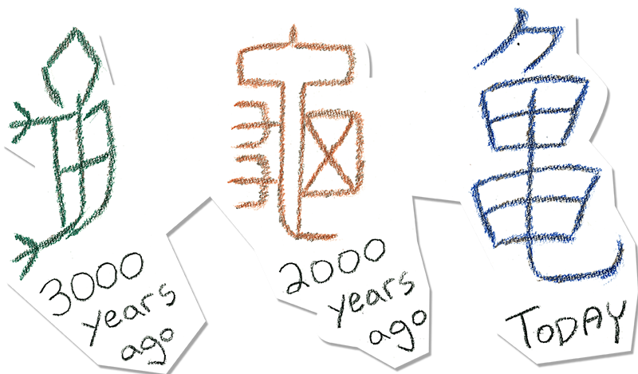

Animals like the turtle make up many of the
象形文字(shou-kei-mo-ji), or "picture characters."
They represent a straight depiction of a creature, item
or phenonenom, and were some of the earliest characters
ever created.

The bone script character (left) began
as simply a drawing of a turtle. The seal script (middle)
form is streamlined, but still retains a distinct head,
shell, and tail. The modern form (right) is further simplified,
with parts of the turtle replaced with common elements
to represent the headク body田 and tail乚.